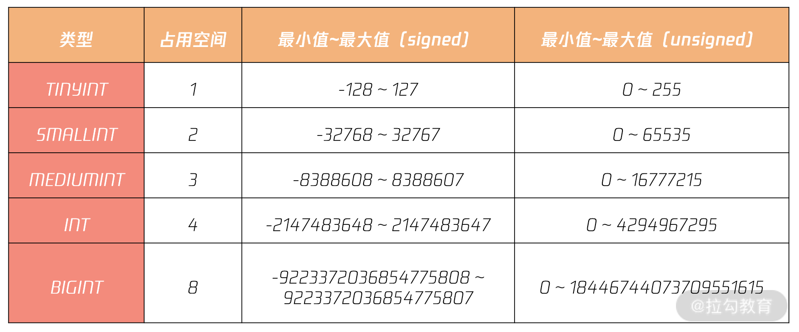
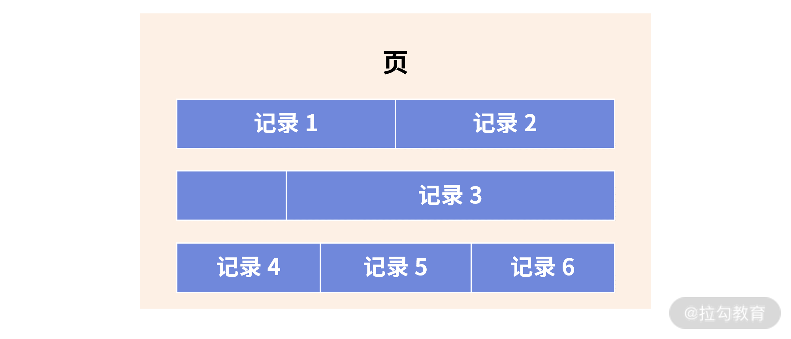

- 00 开篇词 从业务出发，开启海量 MySQL 架构设计.md.html
- 01 数字类型：避免自增踩坑.md.html
- 02 字符串类型：不能忽略的 COLLATION.md.html
- 03 日期类型：TIMESTAMP 可能是巨坑.md.html
- 04 非结构存储：用好 JSON 这张牌.md.html
- 05 表结构设计：忘记范式准则.md.html
- 06 表压缩：不仅仅是空间压缩.md.html
- 07 表的访问设计：你该选择 SQL 还是 NoSQL？.md.html
- 08 索引：排序的艺术.md.html
- 09 索引组织表：万物皆索引.md.html
- 10 组合索引：用好，性能提升 10 倍！.md.html
- 11 索引出错：请理解 CBO 的工作原理.md.html
- 12 JOIN 连接：到底能不能写 JOIN？.md.html
- 13 子查询：放心地使用子查询功能吧！.md.html
- 14 分区表：哪些场景我不建议用分区表？.md.html
- 15 MySQL 复制：最简单也最容易配置出错.md.html
- 16 读写分离设计：复制延迟？其实是你用错了.md.html
- 17 高可用设计：你怎么活用三大架构方案？.md.html
- 18 金融级高可用架构：必不可少的数据核对.md.html
- 19 高可用套件：选择这么多，你该如何选？.md.html
- 20 InnoDB Cluster：改变历史的新产品.md.html
- 21 数据库备份：备份文件也要检查！.md.html
- 22 分布式数据库架构：彻底理解什么叫分布式数据库.md.html
- 23 分布式数据库表结构设计：如何正确地将数据分片？.md.html
- 24 分布式数据库索引设计：二级索引、全局索引的最佳设计实践.md.html
- 25 分布式数据库架构选型：分库分表 or 中间件 ？.md.html
- 26 分布式设计之禅：全链路的条带化设计.md.html
- 27 分布式事务：我们到底要不要使用 2PC？.md.html
- 捐赠
01 数字类型：避免自增踩坑
在进行表结构设计时，数字类型是最为常见的类型之一，但要用好数字类型并不如想象得那么简单，比如：
- 怎么设计一个互联网海量并发业务的自增主键？用 INT 就够了？
- 怎么设计账户的余额？用 DECIMAL 类型就万无一失了吗？
以上全错！
数字类型看似简单，但在表结构架构设计中很容易出现上述“设计上思考不全面”的问题（特别是在海量并发的互联网场景下）。所以我将从业务架构设计的角度带你深入了解数字类型的使用，期待你学完后，能真正用好 MySQL 的数字类型（整型类型、浮点类型和高精度型）。
数字类型
整型类型
MySQL 数据库支持 SQL 标准支持的整型类型：INT、SMALLINT。此外，MySQL 数据库也支持诸如 TINYINT、MEDIUMINT 和 BIGINT 整型类型（表 1 显示了各种整型所占用的存储空间及取值范围）：

各 INT 类型的取值范围
在整型类型中，有 signed 和 unsigned 属性，其表示的是整型的取值范围，默认为 signed。在设计时，我不建议你刻意去用 unsigned 属性，因为在做一些数据分析时，SQL 可能返回的结果并不是想要得到的结果。
来看一个“销售表 sale”的例子，其表结构和数据如下。这里要特别注意，列 sale_count 用到的是 unsigned 属性（即设计时希望列存储的数值大于等于 0）：
mysql> SHOW CREATE TABLE sale\G
*************************** 1. row ***************************
Table: sale
Create Table: CREATE TABLE `sale` (
`sale_date` date NOT NULL,
`sale_count` int unsigned DEFAULT NULL,
PRIMARY KEY (`sale_date`)
) ENGINE=InnoDB DEFAULT CHARSET=utf8mb4 COLLATE=utf8mb4_general_ci
1 row in set (0.00 sec)
mysql> SELECT * FROM sale;
+------------+------------+
| sale_date | sale_count |
+------------+------------+
| 2020-01-01 | 10000 |
| 2020-02-01 | 8000 |
| 2020-03-01 | 12000 |
| 2020-04-01 | 9000 |
| 2020-05-01 | 10000 |
| 2020-06-01 | 18000 |
+------------+------------+
6 rows in set (0.00 sec)
其中，sale_date 表示销售的日期，sale_count 表示每月的销售数量。现在有一个需求，老板想要统计每个月销售数量的变化，以此做商业决策。这条 SQL 语句需要应用到非等值连接，但也并不是太难写：
SELECT
s1.sale_date, s2.sale_count - s1.sale_count AS diff
FROM
sale s1
LEFT JOIN
sale s2 ON DATE_ADD(s2.sale_date, INTERVAL 1 MONTH) = s1.sale_date
ORDER BY sale_date;
然而，在执行的过程中，由于列 sale_count 用到了 unsigned 属性，会抛出这样的结果：
ERROR 1690 (22003): BIGINT UNSIGNED value is out of range in '(`test`.`s2`.`sale_count` - `test`.`s1`.`sale_count`)'
可以看到，MySQL 提示用户计算的结果超出了范围。其实，这里 MySQL 要求 unsigned 数值相减之后依然为 unsigned，否则就会报错。
为了避免这个错误，需要对数据库参数 sql_mode 设置为 NO_UNSIGNED_SUBTRACTION，允许相减的结果为 signed，这样才能得到最终想要的结果：
mysql> SET sql_mode='NO_UNSIGNED_SUBTRACTION';
Query OK, 0 rows affected (0.00 sec)
SELECT
s1.sale_date,
IFNULL(s2.sale_count - s1.sale_count,'') AS diff
FROM
sale s1
LEFT JOIN sale s2
ON DATE_ADD(s2.sale_date, INTERVAL 1 MONTH) = s1.sale_date
ORDER BY sale_date;
+------------+-------+
| sale_date | diff |
+------------+-------+
| 2020-01-01 | |
| 2020-02-01 | 2000 |
| 2020-03-01 | -4000 |
| 2020-04-01 | 3000 |
| 2020-05-01 | -1000 |
| 2020-06-01 | -8000 |
+------------+-------+
6 rows in set (0.00 sec)
浮点类型和高精度型
除了整型类型，数字类型常用的还有浮点和高精度类型。
MySQL 之前的版本中存在浮点类型 Float 和 Double，但这些类型因为不是高精度，也不是 SQL 标准的类型，所以在真实的生产环境中不推荐使用，否则在计算时，由于精度类型问题，会导致最终的计算结果出错。
更重要的是，从 MySQL 8.0.17 版本开始，当创建表用到类型 Float 或 Double 时，会抛出下面的警告：MySQL 提醒用户不该用上述浮点类型，甚至提醒将在之后版本中废弃浮点类型。
Specifying number of digits for floating point data types is deprecated and will be removed in a future release
而数字类型中的高精度 DECIMAL 类型可以使用，当声明该类型列时，可以（并且通常必须要）指定精度和标度，例如：
salary DECIMAL(8,2)
其中，8 是精度（精度表示保存值的主要位数），2 是标度（标度表示小数点后面保存的位数）。通常在表结构设计中，类型 DECIMAL 可以用来表示用户的工资、账户的余额等精确到小数点后 2 位的业务。
然而，在海量并发的互联网业务中使用，金额字段的设计并不推荐使用 DECIMAL 类型，而更推荐使用 INT 整型类型（下文就会分析原因）。
业务表结构设计实战
整型类型与自增设计
在真实业务场景中，整型类型最常见的就是在业务中用来表示某件物品的数量。例如上述表的销售数量，或电商中的库存数量、购买次数等。在业务中，整型类型的另一个常见且重要的使用用法是作为表的主键，即用来唯一标识一行数据。
整型结合属性 auto_increment，可以实现自增功能，但在表结构设计时用自增做主键，希望你特别要注意以下两点，若不注意，可能会对业务造成灾难性的打击：
- 用 BIGINT 做主键，而不是 INT；
- 自增值并不持久化，可能会有回溯现象（MySQL 8.0 版本前）。
从表 1 可以发现，INT 的范围最大在 42 亿的级别，在真实的互联网业务场景的应用中，很容易达到最大值。例如一些流水表、日志表，每天 1000W 数据量，420 天后，INT 类型的上限即可达到。
因此，（敲黑板 1）用自增整型做主键，一律使用 BIGINT，而不是 INT。不要为了节省 4 个字节使用 INT，当达到上限时，再进行表结构的变更，将是巨大的负担与痛苦。
那这里又引申出一个有意思的问题：如果达到了 INT 类型的上限，数据库的表现又将如何呢？是会重新变为 1？我们可以通过下面的 SQL 语句验证一下：
mysql> CREATE TABLE t (
-> a INT AUTO_INCREMENT PRIMARY KEY
-> );
mysql> INSERT INTO t VALUES (2147483647);
Query OK, 1 row affected (0.01 sec)
mysql> INSERT INTO t VALUES (NULL);
ERROR 1062 (23000): Duplicate entry '2147483647' for key 't.PRIMARY'
可以看到，当达到 INT 上限后，再次进行自增插入时，会报重复错误，MySQL 数据库并不会自动将其重置为 1。
第二个特别要注意的问题是，（敲黑板 2）MySQL 8.0 版本前，自增不持久化，自增值可能会存在回溯问题！
mysql> SELECT * FROM t;
+---+
| a |
+---+
| 1 |
| 2 |
| 3 |
+---+
3 rows in set (0.01 sec)
mysql> DELETE FROM t WHERE a = 3;
Query OK, 1 row affected (0.02 sec)
mysql> SHOW CREATE TABLE t\G
*************************** 1. row ***************************
Table: t
Create Table: CREATE TABLE `t` (
`a` int NOT NULL AUTO_INCREMENT,
PRIMARY KEY (`a`)
) ENGINE=InnoDB AUTO_INCREMENT=4 DEFAULT CHARSET=utf8mb4 COLLATE=utf8mb4_general_ci
1 row in set (0.00 sec
可以看到，在删除自增为 3 的这条记录后，下一个自增值依然为 4（AUTO_INCREMENT=4），这里并没有错误，自增并不会进行回溯。但若这时数据库发生重启，那数据库启动后，表 t 的自增起始值将再次变为 3，即自增值发生回溯。具体如下所示：
mysql> SHOW CREATE TABLE t\G
*************************** 1. row ***************************
Table: t
Create Table: CREATE TABLE `t` (
`a` int NOT NULL AUTO_INCREMENT,
PRIMARY KEY (`a`)
) ENGINE=InnoDB AUTO_INCREMENT=3 DEFAULT CHARSET=utf8mb4 COLLATE=utf8mb4_general_ci
1 row in set (0.00 s
若要彻底解决这个问题，有以下 2 种方法：
- 升级 MySQL 版本到 8.0 版本，每张表的自增值会持久化；
- 若无法升级数据库版本，则强烈不推荐在核心业务表中使用自增数据类型做主键。
其实，在海量互联网架构设计过程中，为了之后更好的分布式架构扩展性，不建议使用整型类型做主键，更为推荐的是字符串类型（这部分内容将在 05 节中详细介绍）。
资金字段设计
在用户余额、基金账户余额、数字钱包、零钱等的业务设计中，由于字段都是资金字段，通常程序员习惯使用 DECIMAL 类型作为字段的选型，因为这样可以精确到分，如：DECIMAL(8,2)。
CREATE TABLE User (
userId BIGINT AUTO_INCREMENT,
money DECIMAL(8,2) NOT NULL,
......
)
（敲黑板3）在海量互联网业务的设计标准中，并不推荐用 DECIMAL 类型，而是更推荐将 DECIMAL 转化为 整型类型。也就是说，资金类型更推荐使用用分单位存储，而不是用元单位存储。如1元在数据库中用整型类型 100 存储。
金额字段的取值范围如果用 DECIMAL 表示的，如何定义长度呢？因为类型 DECIMAL 是个变长字段，若要定义金额字段，则定义为 DECIMAL(8,2) 是远远不够的。这样只能表示存储最大值为 999999.99，百万级的资金存储。
用户的金额至少要存储百亿的字段，而统计局的 GDP 金额字段则可能达到数十万亿级别。用类型 DECIMAL 定义，不好统一。
另外重要的是，类型 DECIMAL 是通过二进制实现的一种编码方式，计算效率远不如整型来的高效。因此，推荐使用 BIG INT 来存储金额相关的字段。
字段存储时采用分存储，即便这样 BIG INT 也能存储千兆级别的金额。这里，1兆 = 1万亿。
这样的好处是，所有金额相关字段都是定长字段，占用 8 个字节，存储高效。另一点，直接通过整型计算，效率更高。
注意，在数据库设计中，我们非常强调定长存储，因为定长存储的性能更好。
我们来看在数据库中记录的存储方式，大致如下：

若发生更新，记录 1 原先的空间无法容纳更新后记录 1 的存储空间，因此，这时数据库会将记录 1 标记为删除，寻找新的空间给记录1使用，如：

上图中*记录 1 表示的就是原先记录 1 占用的空间，而这个空间后续将变成碎片空间，无法继续使用，除非人为地进行表空间的碎片整理。
那么，当使用 BIG INT 存储金额字段的时候，如何表示小数点中的数据呢？其实，这部分完全可以交由前端进行处理并展示。作为数据库本身，只要按分进行存储即可。
总结
今天，我带你深入了解了 MySQL 数字类型在表结构设计中的实战。我总结一下今天的重点：
- 不推荐使用整型类型的属性 Unsigned，若非要使用，参数 sql_mode 务必额外添加上选项 NO_UNSIGNED_SUBTRACTION；
- 自增整型类型做主键，务必使用类型 BIGINT，而非 INT，后期表结构调整代价巨大；
- MySQL 8.0 版本前，自增整型会有回溯问题，做业务开发的你一定要了解这个问题；
- 当达到自增整型类型的上限值时，再次自增插入，MySQL 数据库会报重复错误；
- 不要再使用浮点类型 Float、Double，MySQL 后续版本将不再支持上述两种类型；
- 账户余额字段，设计是用整型类型，而不是 DECIMAL 类型，这样性能更好，存储更紧凑。
© 2019 - 2023 Liangliang Lee. Powered by gin and hexo-theme-book.